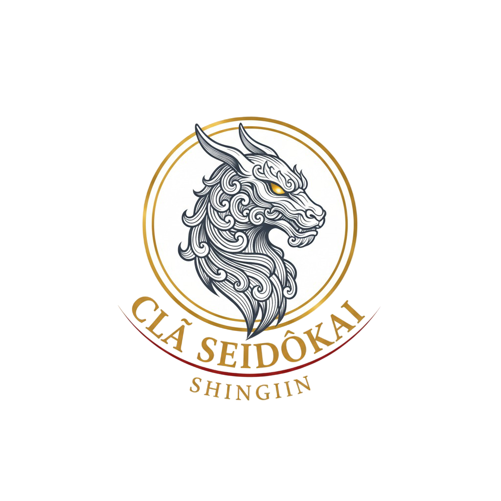

VIRGULINO SANTOS
Saiko Komon
毘流護理乃

SANYŌ-KAI
“O escudo que não protege o seu senhor deve ser oferecido ao fogo.”
DATA: 25 de Janeiro de 2026
LOCAL: Pátio da Sede (Jimusho Seidōkai)
PRESIDENTE DA MESA: Saiko Komon Virgulino Santos
I. O Ato de Insubordinação (Hanzai):
O Gakusei Matheus Galdino foi submetido a julgamento por grave quebra de disciplina. O acusado, agindo por vaidade e sem autorização, iniciou conflito armado contra o agente Andre Brasil, forçando a exposição direta do Oyabun Josef Medina a uma investigação federal de alto impacto.
II. Análise do Dano (Songai Bunseki):
O Conselho classificou o risco gerado como NÍVEL ÔMEGA. A conduta violou a doutrina Shishi no Mukanshin, colocando a liberdade da Liderança Suprema em risco iminente e fornecendo ao Estado causa provável para intervenção sistêmica contra a Família.
III. O Testemunho das Testemunhas (Shōnin):
O Shatei Emerson Carvalho e o Gakusei Thierry Ederson confirmaram a desobediência aos protocolos de contenção. Confrontado, Matheus Galdino admitiu sua culpa e submeteu sua vida à Vontade do Conselho.
IV. Veredito Final (Sabaki):
Para limpar a mancha de desonra, a Liderança decreta a sentença de TATE NO GISEI (O SACRIFÍCIO DO ESCUDO):
• Expiação Estatal: O acusado deverá entregar-se à Polícia Federal, assumindo a culpa total para inocentar o Oyabun.
• Reparação Financeira: Retenção integral dos proventos da oficina por um ciclo semanal (7 dias).
• Misogi Operacional: Proibição de atividades Ura por 72 horas e suspensão do porte de armamento pesado sem supervisão.
“A lealdade é o único escudo que não pode ter frestas.”
VIRGULINO SANTOS
Saiko Komon